黄泉の底へ、幾度でも。 To the depths of Yomi, again and again.
気力を削り、弾きで隙を作り、致命の一札を叩き込め。87体の妖怪が待つ黄泉を、362枚の札と174種の神器で攻略する和風ローグライク・デッキ構築。7つの出自から戦法を選び、敗北を次の勝ち筋へ変えろ。 Break stamina, parry the counterblow, and land a fatal card. Descend through Yomi in a Japanese folklore roguelike deckbuilder with 87 yokai, 362 cards, 174 artifacts, and 7 origins. Turn every death into your next winning line.
iOS版は無料でお試しいただけます(全編プレイにはアプリ内課金「製品版購入」が必要)。 The iOS version is free to try; the “Full Version” in-app purchase unlocks the whole game.
87
体の妖怪yokai
362
枚の札cards
174
種の神器artifacts
7
つの出自origins
Trailer
最初の30秒で、空気がわかる。 Thirty seconds says it all.
Gameplay
気力を崩し、体力を絶つ。 Shatter their stamina. End their life.
敵の攻めは気力(スタミナ)が盾となり、気力が尽きた者に刃が届く。二層の体力管理と5つの攻撃属性が、一手ごとの重みを生み出します。 Stamina shields against every blow — only when it breaks does the blade reach flesh. Two-layer health and five attack attributes give weight to every single card.
01
気力と体力の駆け引きStamina & HP tactics
敵味方ともに「気力」と「体力」の二層構造。気力を削り切ってから叩き込むか、貫通で直接体力を狙うか。毎手番5枚のドローから最善の一手を選び抜く。 Both sides fight with layered stamina and HP. Grind stamina down before striking — or pierce straight through. Choose your best play from five drawn cards each turn.
02
5つの攻撃属性Five attack attributes
通常・貫通・崩し・致命・衝撃。属性ごとに到達先や効果が異なり、敵の構えに合わせた属性選択が勝敗を分ける。 Normal, Pierce, Break, Fatal, Impact. Each attribute lands differently — reading the enemy's stance and choosing the right one decides the fight.
03
神器と秘術Artifacts & Secret Arts
道中で得る「神器」は自動で発動する加護。「秘術」は一度きりの切り札。毒・出血・朦朧などの状態異常も絡め、ビルドの幅は無限に。 Artifacts grant passive blessings; Secret Arts are one-shot trump cards. Weave in poison, bleed and stun for endless build variety.
04
降りるたび、違う黄泉A different Yomi every descent
マップ分岐、商人、祠、そして87体の怪異たち。4つの章の最深部では、章の主が待ち受ける。倒れても、また降りればいい。 Branching maps, merchants, shrines, and 87 distinct demons. A chapter lord waits at each depth. Fall — and descend again.
Screenshots
墨と朱の戦場。 A battlefield of ink and vermilion.
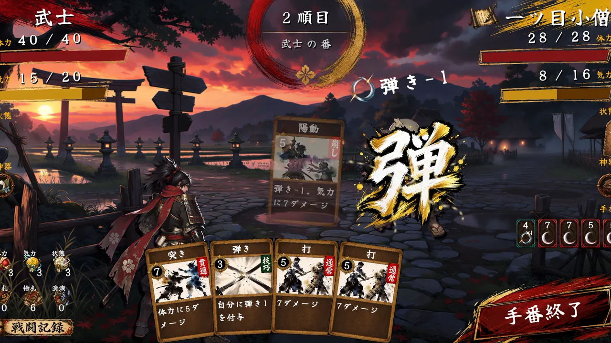
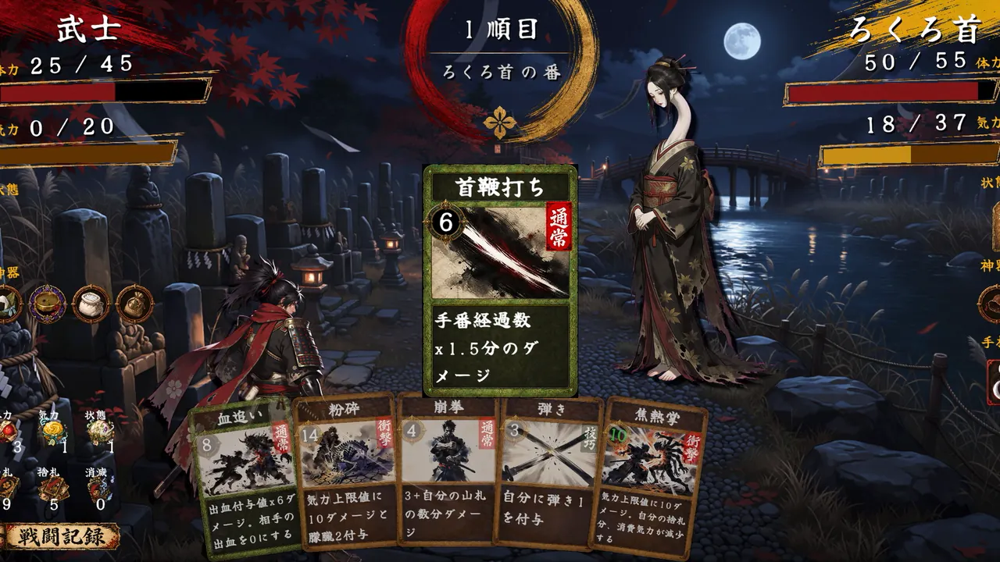
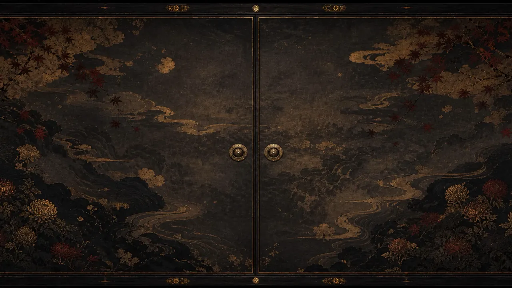
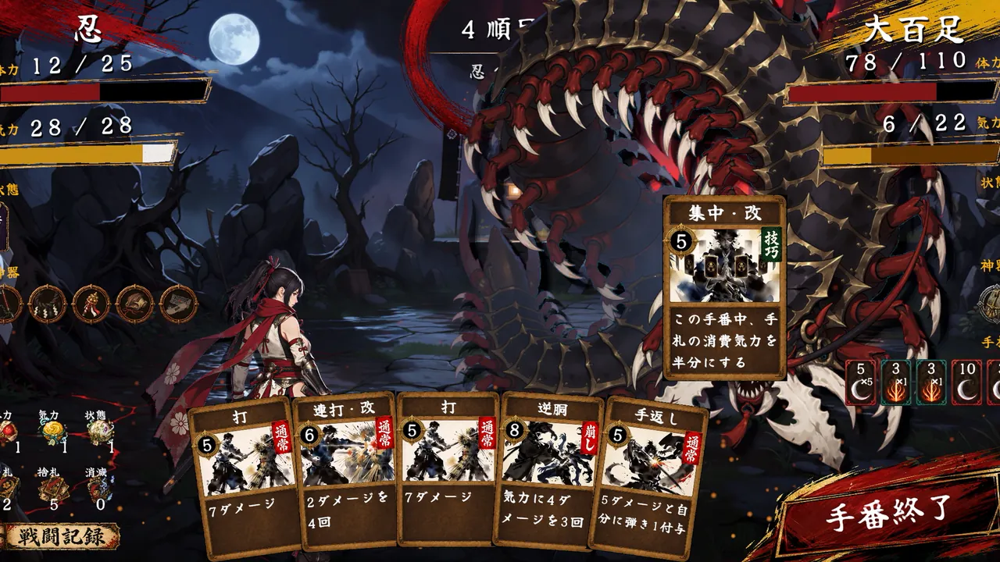
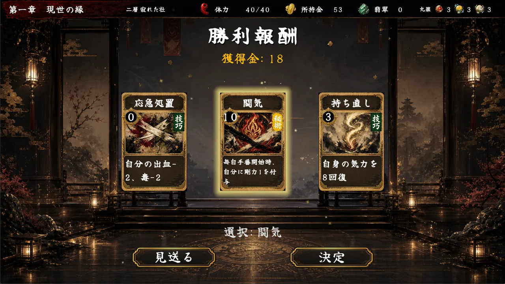
Enemies — 妖怪Yokai
第一章に潜む、怪異たち。 The apparitions of Chapter One.
辻に、軒先に、川辺に。降り始めの黄泉であなたを待つのは、古の絵巻から抜け出したような妖怪たち。全87体の怪異のうち、序章を彩る五体を紹介します。 At the crossroads, under the eaves, by the riverside. Waiting in the shallows of Yomi are yokai as if stepped from an old picture-scroll. Here are five of the 87 apparitions that open your descent.
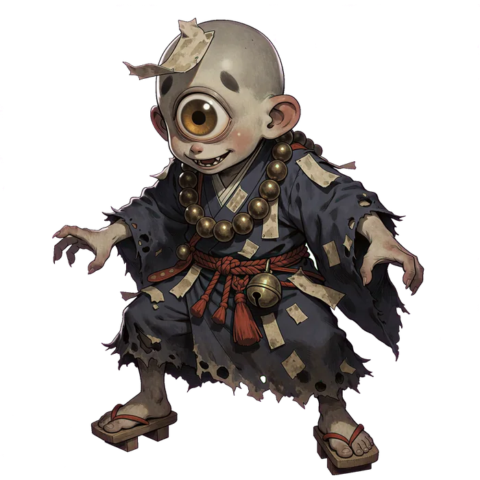
一ツ目小僧Hitotsume-kozo
Hitotsume-kozo
額に大きな目玉をひとつ。夕闇の辻で人を驚かせ、その悲鳴を味わって笑い転げる悪戯小僧。One great eye in its brow. A prankster of the dusk crossroads who startles passersby and savors their screams.
提灯お化けChochin-obake
Chochin-obake
破れた古提灯から飛び出した一つ目の妖。夜道で提灯が一つ増えたと喜ぶなかれ、二つ目はもう肩で揺れている。A one-eyed spirit from a torn old lantern. Don't rejoice when a lantern joins you on a night road — the second sways at your shoulder.
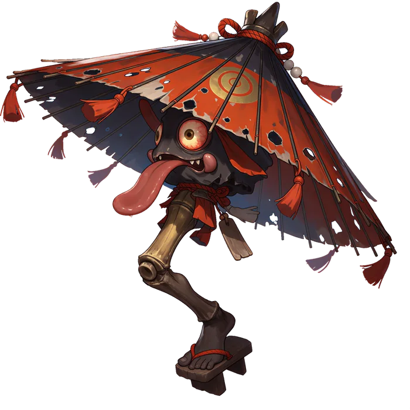
唐傘お化けKarakasa-obake
Karakasa-obake
百年捨て置かれた古傘が魂を得た付喪神の代表格。一本足で跳ね回り、雨も降らぬ晩に踊る剽軽者。The archetypal tsukumogami — an umbrella cast aside a century, now hopping on one leg and dancing on rainless nights.
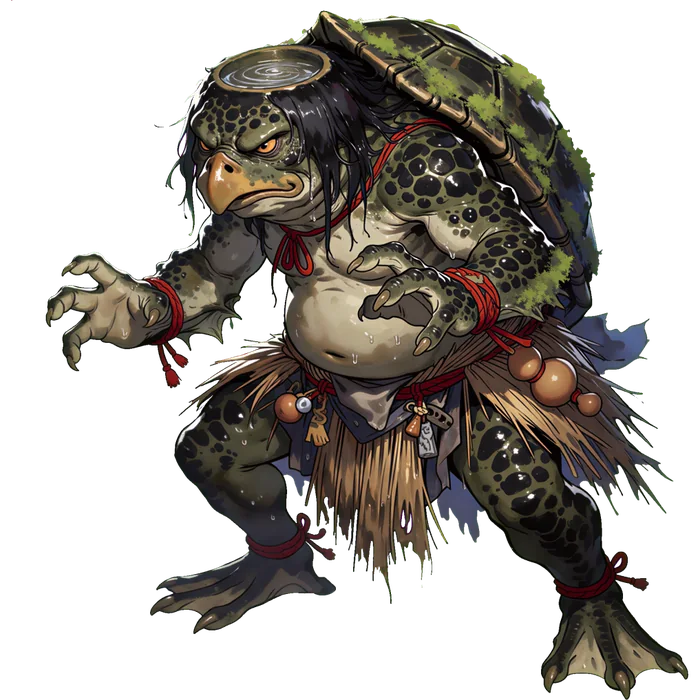
河童Kappa
Kappa
頭の皿に水を湛えた緑の童。胡瓜と相撲を好み、礼節に厳しい。川辺で気を抜けば投げ飛ばされる。A green child with a water-brimmed dish. It loves cucumbers and sumo and etiquette — drop your guard by the river and it flings you down.
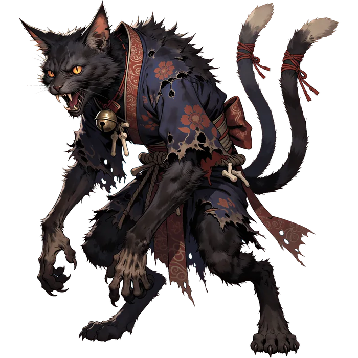
猫又Nekomata
Nekomata
十年以上仕えた猫が二股の尾を得て化けたもの。可愛がった分だけ恨みは深く、家人の言葉を真似て低く笑う。A cat of ten years and more, its tail split in two. The more it was doted on, the deeper its grudge — it mimics your speech in a low chuckle.
Card Art
一枚一枚が、筆で描いた武。 Every card, a brushstroke of war.
攻撃、崩し、秘術 ― 100枚を超えるカードはすべて筆致のアートワークで描き下ろし。 Attacks, breaks, secret arts — over a hundred cards, each drawn in brush-style artwork.
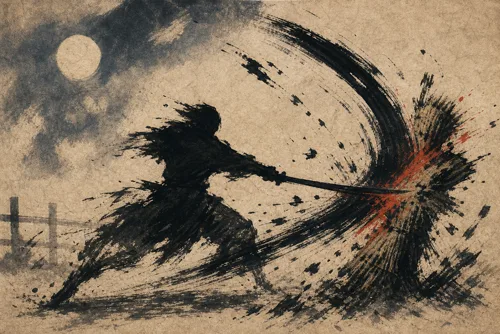
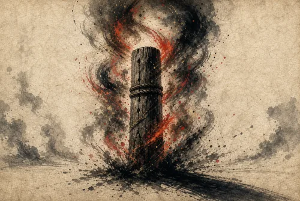
Specs
製品情報Product Info
| タイトルTitle | Descent of Yomi ― 黄泉降りDescent of Yomi |
|---|---|
| ジャンルGenre | 和風ローグライク・デッキ構築バトルJapanese-styled roguelike deckbuilder |
| プラットフォームPlatforms | Steam (Windows 10/11 64bit) / iOS・iPadOS 13.0以降Steam (Windows 10/11 64-bit) / iOS & iPadOS 13.0+ |
| 価格Price | Steam版 ¥655(買い切り) / iOS版 無料 ― アプリ内課金「製品版購入」¥600で全編プレイ可能Steam ¥655 (one-time) / iOS free — “Full Version” in-app purchase ¥600 unlocks the entire game |
| 対応言語Languages | 日本語 / 英語Japanese / English |
| 配信日Release | Steam版 2026年7月27日 / iOS版 2026年7月Steam: 27 July 2026 / iOS: July 2026 |
| レーティングAge rating | App Store 9+(ファンタジー暴力・恐怖表現を含みます)App Store 9+ (fantasy violence and horror themes) |
| 開発・販売Developer & Publisher | R-each |
| Steam | store.steampowered.com/app/4785610 |
| App Store | apps.apple.com/jp/app/descent-of-yomi |
Out Now
黄泉の門は、開いている。 The gates of Yomi are open.
Steam版は買い切り¥655。iOS版は無料でお試しいただけます。何度でも降りて、あなたの勝ち筋を見つけてください。 ¥655 once on Steam, or free to try on iOS. Descend as many times as it takes to find your winning line.